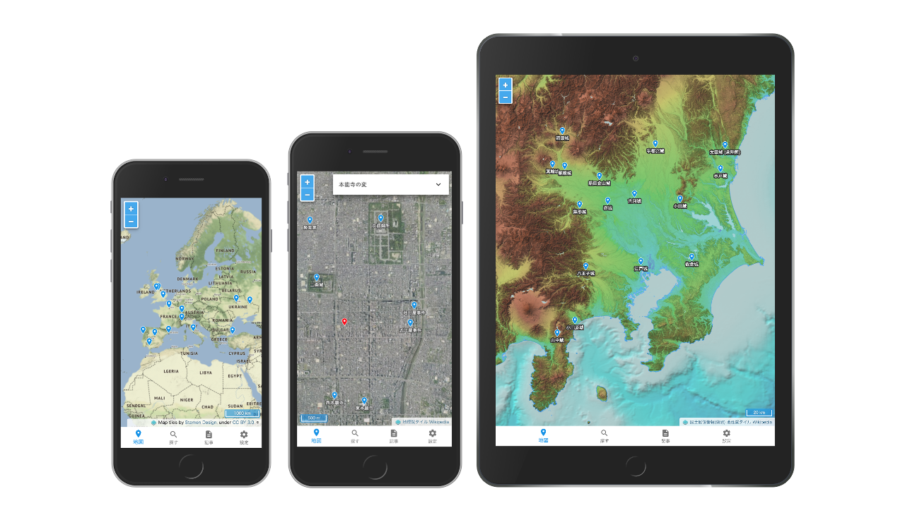

Wikipediaを地図で見るアプリWikiLayersを公開しました。
URL: https://cieloazul310.github.io/wikilayers
WikiLayersとは

WikiLayers（ウィキレイヤーズ）はWikipediaから座標を取得し地図で表示するアプリケーションです。
遊び方
- 検索フォームに表示したい記事のタイトル、またはURLを入れて検索（「水戸城」「 https://ja.wikipedia.org/wiki/偕楽園 」など）
- 記事の座標を取得したら「地図に追加」を押す
- 「地図」を見る
検索例
Wikipediaの記事に座標がついているものであれば取得可能です。 （座標があるのに取得できないものもあるので、どういうカラクリなのか今後調べたいです）
- 都市・地名: 水戸市、小名浜、ラスベガス、ポンペイ など
- 史跡・名所: 水戸城、偕楽園、法隆寺、コロッセウム など
- 建築・土木: 東京タワー、トキワ荘、猿橋、サヴォア邸 など
- 山岳・地形: 富士山、室戸岬、ヌル島、カイバル峠 など
- スタジアム: ケーズデンキスタジアム水戸、日立柏サッカー場、アザディ・スタジアム など
- 歴史上の事件: 本能寺の変、池田屋事件、ワールシュタットの戦い、ウッドストック・フェスティバル など
その他機能
- URLによる検索では多国語に対応しています。
- 記事ページで選択した記事の本文を見ることができます。
- 8種類の背景地図が選べます。
- GPSを使った現在地の表示ができます。
- スマートフォンでWikiLayersをホーム画面に追加すると、全画面でWikiLayersを起動できます。
- ローカルストレージに情報が保存されるので、アプリを離れても状態は維持されます。
- 設定ページで取得したアイテムからGeoJSONファイルを出力することができます。
きっかけ
Wikipediaには記事上の座標から他の地図サービスにリンクするGeoHackという機能があります。 これはよく使っていて、例えば大河ドラマを見ながらお城の情報をWikipediaで見て、GeoHackで地理院地図に飛んで位置や地形を確認する、ということをよくやっています。
地理院地図には色別標高図と傾斜量図というレイヤがあり、これを合成することでカシミール3Dのような綺麗な地形地図をWEB上で閲覧することができます。
ただし、この方法だと複数の箇所を調べたいとき、その度にWikipediaを検索する→GeoHackで地理院地図に飛ぶ→レイヤを調整する、という一連の作業が必要になるので非常に面倒です。
Wikipediaの座標をアイコンで複数表示できる地図があればいいなと思っていたので、ちょうど勉強中のReactやReduxを使って、勉強がてら試しに作ってみました。
技術
create-react-appでシングル・ページ・アプリケーション(SPA)やプログレッシブ・ウェブ・アプリ(PWA)のつもりで作ってみました。
React, Redux, Material-UI, OpenLayersを中心として動いています。
React+Redux関連のコードは基本的にはReduxのチュートリアルにあるTodo AppやReddit APIをベースに作っています。
他にもReact RouterやRedux Persistなど導入したい機能にしたがって色々使ってみました。使用ライブラリの詳細はGitHubリポジトリのpackage.jsonを参照してください。
Wikipediaの情報はMediaWiki APIを使用して取得しています。 今回作るにあたって勉強になった部分が多くあったので、別途記事にしたいです。
苦労した点
Webデザインが苦手なので、Material-UIを使って楽しようと目論んでいましたが、結局デザインのところでかなり時間と労力を使ってしまいました。
今後の課題など
- Service Workerには全然手をつけてないので使ってみたい
- GitHubPagesで無理やりホストしたけど、今後必要に応じてFirebaseを使ってみたい
- コードを分割したい
- Wikipediaの記事の座標の追加方法などをまとめたい
付記
- Version: 1.0 (2018/01/29)
- 作成者: @cieloazul310
- GitHubリポジトリ: https://github.com/cieloazul310/wikilayers/
Copyright © 2018 cieloazul310 All right reserved.